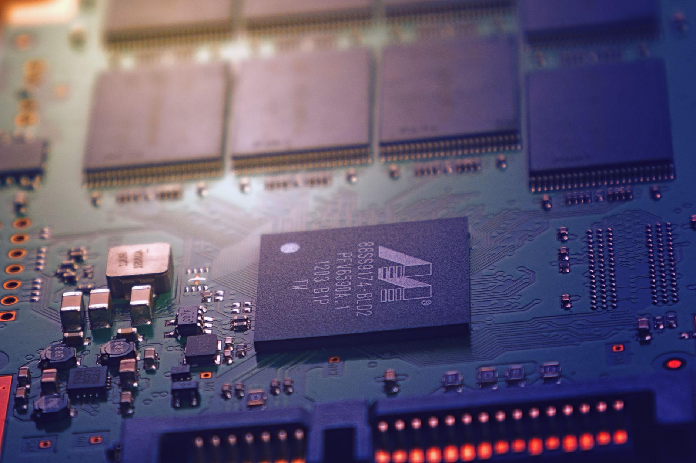

미중 칩 합의 또 불발…韓 파운드리·소재 이중 압박 장기화

트럼프 행정부는 엔비디아 H20을 포함한 AI 반도체의 제3국 수출에 미국 정부 사전 허가를 의무화하는 방안을 추진 중이며, 최근 미중 정상회담에서도 반도체 분야 별도 합의는 이뤄지지 않았다. 엔비디아의 중국향 매출은 2024 회계연도 기준 전체의 약 17%였으나, 현재 H20 추가 규제로 실질 공급은 사실상 차단된 상태다.
한국 반도체 업계는 단기적으로 엔비디아 공백에서 반사이익을 기대한다. SK하이닉스는 HBM3E 공급의 50% 이상을 엔비디아에 납품하고 있으며, 엔비디아가 중국 외 지역 AI 투자를 집중할수록 HBM 수요는 유지 혹은 확대된다. 삼성전자는 엔비디아 HBM 퀄 테스트 통과 여부가 2025년 하반기 실적 변수로 작용한다.
미국의 허가 의무화가 제3국에도 적용될 경우 한국 팹리스(리벨리온, 사피온 등)가 엔비디아 칩을 수입하거나 재수출하는 과정에서 허가 취득 비용과 납기 지연 리스크가 발생한다. 또한 중국이 갈륨·게르마늄·이트륨 수출통제를 유지하는 상황에서 한국 소재 기업들은 대체 조달에 2~5배 높은 단가를 지불하고 있다.
미중 양측의 규제가 장기화될수록 한국은 어느 진영의 서플라이 체인에도 완전히 편입되지 못하는 '중간자 리스크'에 노출된다. 미국 CHIPS법 보조금 수령 조건으로 중국 내 생산 능력 확장이 10년간 제한되며, 삼성전자(시안 낸드)·SK하이닉스(우시 D램)의 중국 공장 운영은 지속적인 정책 불확실성 아래 놓여 있다.
이번 미중 합의 불발의 핵심은 '칩이 아니라 소재'에 있다. 엔비디아가 중국에 못 팔면 한국 HBM 수요는 유지되지만, 중국이 갈륨·게르마늄·이트륨을 계속 틀어막으면 한국 소재 공급망은 구조적으로 취약해진다. 단기 수혜와 중기 리스크가 동시에 작동하는 비대칭 구조다.
합의 불발이 장기화되면 한국의 전략적 선택지는 좁아진다. 미국 편입 심화(CHIPS 보조금 수령, 중국 공장 축소)와 중국 시장 유지 사이에서 양자택일 압박이 커지고, 어느 쪽을 선택해도 단기 매출 손실이 불가피하다. 실제로 삼성전자의 중국 매출 비중은 2024년 기준 약 26%로 여전히 무시할 수 없는 규모다.
SK하이닉스는 엔비디아 HBM 공급 집중도가 높아 미중 갈등 장기화 수혜를 가장 직접적으로 받는다. 엔비디아의 비중국 AI 투자 집중이 지속되면 HBM3E 주문 물량 유지 가능성이 높고, 2026년 HBM4 전환 시점에 선점 효과를 강화할 수 있다.
국내 소재·부품 국산화 기업(동진쎄미켐, 솔브레인, 이엔에프테크놀로지 등)은 중국 소재 대체 수요가 늘면서 단가 인상과 물량 증가를 동시에 기대할 수 있는 구간에 있다. 소부장 1700억 정부 지원이 이들 기업의 R&D 비용 일부를 흡수해 수익성 방어에 기여한다.
삼성전자는 중국 시안 낸드 공장의 생산 능력 확장이 CHIPS법 조건에 의해 제한되는 동시에, HBM 퀄 테스트 지연으로 엔비디아 수주 기회를 경쟁사에 내줄 리스크가 중첩된다. 두 리스크가 동시에 현실화되면 2025년 하반기 메모리 매출 방어가 어렵다.
한국 팹리스 스타트업(리벨리온, 사피온, 퓨리오사AI)은 엔비디아 칩 수입 허가 의무화 시 GPU 조달 납기가 불안해지고, 클라우드 업체 수주 일정이 밀리는 간접 타격을 받는다. 자체 칩 개발 완료 전까지의 공백 구간이 치명적이다.
HBM 관련 소재(스택 접착제, 에폭시 몰딩 컴파운드, TSV 도금액)를 공급하는 기업이라면 SK하이닉스 증산 로드맵과 연동해 2025년 4분기~2026년 1분기 선제 재고 확보 계획을 지금 세워야 한다. 엔비디아 HBM 수요는 분기별 예측보다 실제 납품이 2~3개월 앞당겨지는 경우가 많다.
미국 CHIPS법 보조금을 신청하거나 검토 중인 기업은 '중국 반도체 우려 기업'(화웨이·CXMT 등) 거래 제한 조항의 소재 범위가 어디까지 적용되는지 법무 검토를 선행해야 한다. 소재 단계 거래가 포함될 경우 보조금 수령 기업의 원자재 공급자도 영향을 받는다.
실제 조달 현장에서는 — 미중 규제 충돌 이후 고객사들이 '중국산이냐 아니냐'를 묻기 전에 '미국 제재 리스트에 걸리는 기업 제품이냐'를 먼저 확인하는 관행이 정착되고 있다. 원산지 증명서(CoO)와 함께 제3자 감사 보고서를 요구하는 고객이 늘고 있어, 공급자는 서류 체계를 지금부터 갖춰야 불필요한 납품 지연을 막을 수 있다.
이 포스팅은 쿠팡 파트너스 활동의 일환으로 수수료를 제공받습니다.